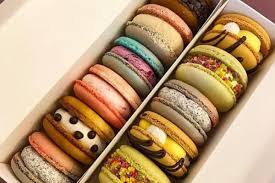

Macaron`s history
오늘날 마카롱은 프랑스를 대표하는 과자로 여겨지지만, 본래 마카롱은 이탈리아에서 유래된 과자다. 그러나 마카롱이 처음 만들어진 곳은 확실하게 알려져 있지 않다. 대부분의 문헌은 1500년에 시작되었음을 알리지만, 일부 자료들은 중세 유럽에서 마카롱이 처음 만들어졌다고 한다. 더불어 이탈리아의 가톨릭 수도원에서 처음 만들어졌다고도 하는데, 또한 어떤 자료들은 791년, 코르메리 (Cormery)라는 프랑스 중부에 자리한 마을에서 만들기 시작했다고도 한다. 그러나 이 자료들은 공식적으로 확인되지 않았으며, 마카롱에 대한 공식적인 자료들로 인정을 받지 못하고 있다.
마카롱의 기원에 대해서 공식적으로 밝혀진 것은 다음과 같다. 1453년부터 이탈리아 요리에 본격적으로 아몬드가 사용되기 시작하면서, 1500년 마카롱의 주재료인 아몬드 페이스트가 이탈리아에서 개발되었다. 1533년 이탈리아의 귀족 카트린 드 메디시스가 프랑스의 왕이었던 앙리 2세랑 결혼할 무렵, 카트린의 요리사들이 카트린의 아버지가 소개한 아몬드 페이스트로 새로운 요리를 개발하였는데, 이것이 마카롱의 탄생으로 알려져 있다.
프랑스와 이탈리아 귀족들의 통혼으로 인하여 때문에 마카롱이 이탈리아에서 프랑스로 전파되었던 것이다.(오늘날 프랑스를 대표하는 요리 문화는 본래 이탈리아를 비롯한 해외에서 수입해와 이를 개량하여 성립되었다.) 마카롱이라는 단어가 최초로 등장한 것은 프랑스 르네상스 시대의 유명한 작가였던 프랑수아 라블레가 1558년에 쓴 기록이다.